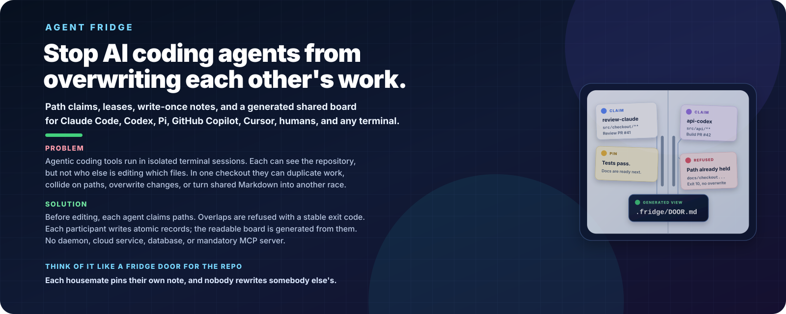
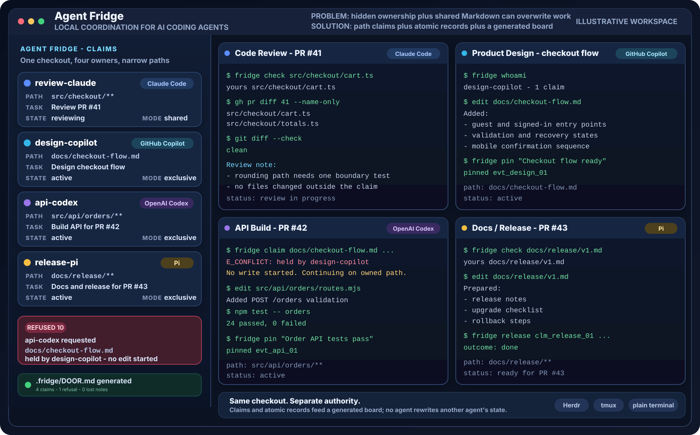
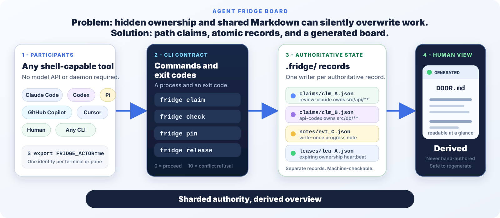

Parallel work stays parallel
Review, product design, API work, and release documentation each own distinct paths. There is no global workspace lock.
Public visual story
Agent Fridge lets Claude Code, OpenAI Codex, Pi, GitHub Copilot, Cursor, humans, and any shell-capable tool coordinate in one Git checkout without rewriting each other's state.

1. The failure
Two real terminal agents coordinated through To-do.done.md
and shared-development-updates.md. Each read the shared
file, worked, and wrote its own copy back. One stale write erased about
128 lines. The bug was the shared writer, not the agents.

npm run demo reproduces the same race with a variable loss count.
The invariant is simple: authoritative records are sharded by owner
and claim. .fridge/DOOR.md is a projection that can be
regenerated at any time.
2. The working day
This sanitized mockup shows a realistic shared workspace. One agent reviews PR #41, one designs the checkout flow, one builds the API for PR #42, and one prepares docs and release work for PR #43. Their claims stop path collisions before editing begins.

Review, product design, API work, and release documentation each own distinct paths. There is no global workspace lock.
When the API agent asks for docs/checkout-flow.md,
the CLI exits 10 and names the current owner. No edit starts.
3. The protocol
Participants use ordinary shell commands. The CLI creates or mutates
the correct per-record files under .fridge/, then renders
a human-readable board from those records.

4. Compatibility
Adapters put the same short rules into each tool's preferred instruction file. The CLI remains the source of enforcement.
| Participant | How it joins | Hooks |
|---|---|---|
| Claude Code | CLAUDE.md plus CLI | Optional |
| OpenAI Codex | AGENTS.md or Codex adapter plus CLI | Not required |
| Pi | Generic instructions plus CLI | Not required |
| GitHub Copilot | Copilot instructions plus CLI | Not required |
| Cursor | Cursor rule plus CLI | Not required |
| Human | Shell commands or read DOOR.md | Not required |
| Any shell tool | claim, check, pin, release | Not required |
| Environment | Identity | Status |
|---|---|---|
| Plain terminal | FRIDGE_ACTOR per shell | Supported |
| tmux / screen / Zellij | One actor per pane | Supported |
| Herdr | One actor per agent pane | Supported |
| VS Code terminal | One actor per terminal | Supported |
| CI and scripts | --agent or environment | Supported |
| macOS / Linux / Windows | Per-checkout state | CI tested |
5. Real CLI evidence
This transcript was captured from Agent Fridge 0.2.0 in a fresh local Git workspace on 2026-08-19. The identifiers and timestamps are run-specific. The excerpt is copied from that run; only line wrapping is adjusted for the page.
$ fridge claim "src/api/**" --task "Review PR #41"
Card clm_01M0DETZN98GNKRJBBYPX6M02W is yours.
scope src/api/**
files 1
mode exclusive
back by 15m from now
When you stop:
fridge release clm_01M0DETZN98GNKRJBBYPX6M02W
--outcome done --note "what changed"$ fridge claim "src/api/routes.mjs" \
--task "Update route docs"
Somebody already has that chore.
card clm_01M0DETZN98GNKRJBBYPX6M02W
who review-claude (claude)
mode exclusive doing: Review PR #41
scope src/api/**
back by 2026-08-19T17:04:27.232Z (in 14m 59s)
clash literal-prefix-nesting:
src/api/routes.mjs, src/api/**
E_CONFLICT: 1 card(s) already cover those paths.
[exit 10]
$ fridge claim "docs/checkout-flow.md" \
--task "Design checkout flow"
Card clm_01M0DETZX6S3JJHTYJ0HTBAEDA is yours.
$ fridge pin "Checkout flow draft ready for review"
pinned evt_01M0DEV011H9FJ0DHM1JPR8NRB$ fridge board
# The door
Fridge `wsp_01M0DETZBP9DJSHFZ8YQVDPANS` | 2 chore(s) claimed | 0 waiting
| Card | Who | Mode | Scope | Doing | Back by |
|---|---|---|---|---|---|
| `clm_01M0DETZN98GNKRJBBYPX6M02W` | review-claude (claude) | exclusive | `src/api/**` | Review PR #41 | in 14m 59s |
| `clm_01M0DETZX6S3JJHTYJ0HTBAEDA` | design-copilot (copilot) | exclusive | `docs/checkout-flow.md` | Design checkout flow | in 14m 59s |
Last notes:
- design-copilot `claim.denied` was blocked on src/api/routes.mjs
- design-copilot `claim.acquired` took docs/checkout-flow.md
- design-copilot `note.note` Checkout flow draft ready for reviewThe complete long-form two-terminal walkthrough is in docs/quickstart.md. The race harness is in the concurrency test.
Install the CLI from the public repository, hang the door once, give each terminal an actor name, and claim paths before editing.